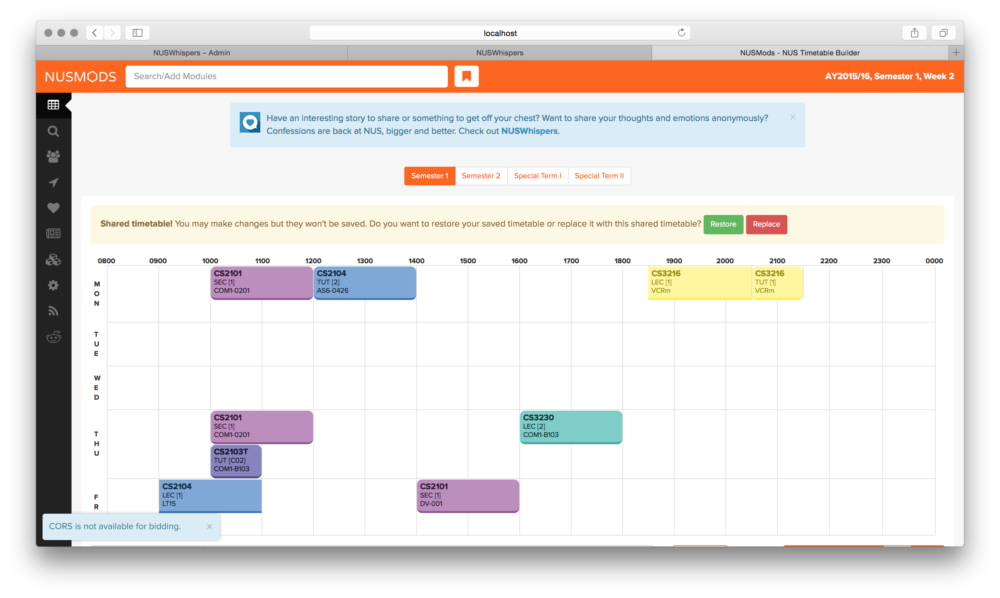
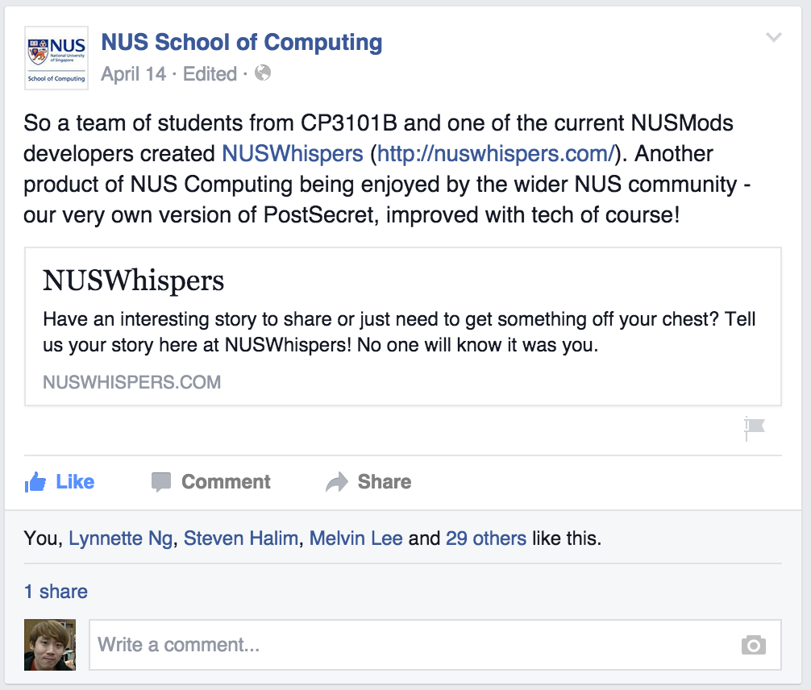
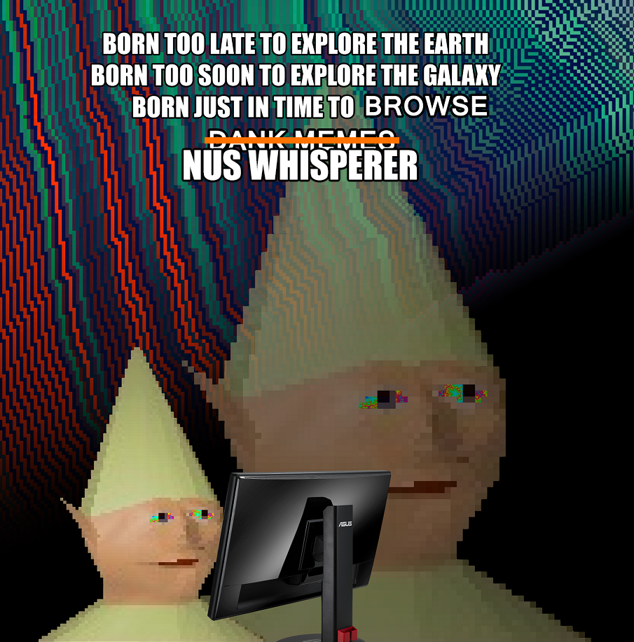
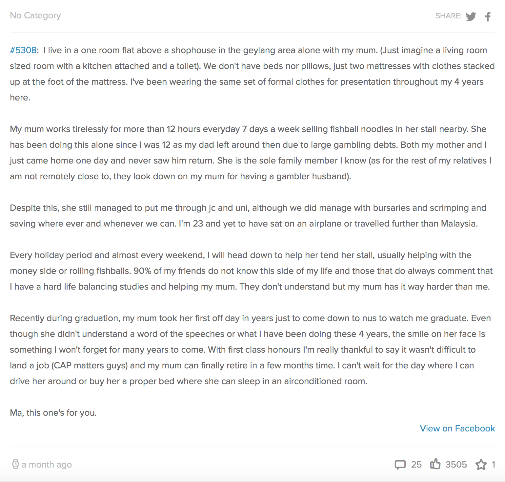

Hi, I'm Yang Shun and
this is Melvin
We created NUSWhispers
Together with many others
How It Started
CP3101B Web Programming and Applications (Recoded to CS3226)
NUS Confessions
- No indexing of confessions
- No categorization
- Moderation process is a hassle
- Most importantly: IT IS DEAD
Leveraging Technology
We can build a custom platform that addresses the problems faced by NUS Confessions
Tech Stack
- Back-end MVC Framework: Laravel 5
- Single Page Application: AngularJS
Initial Launch
- Launched on April 7th
- Got 500 likes within the first day
Chicken and Egg Problem
- Content-heavy application
- No content, no users
- No users, no content
Do things that don't scale
- Took turns to moderate
- Seeding (self-generate initial content)
- Self-commenting
- Shamelessly self-bump posts by liking
and asking friends to like
NUSMods Publicity

Help from major school platforms
SoC Publicity

Help from the faculty
Facebook
- Updates mirrored on NUSWhispers Facebook page
- Convenient liking, sharing and commenting
- Periodic updates via scheduling
Some Numbers
- Facebook Likes: 5,800+
- MAU: 16,900+ (this month)
- Whispers Received: 7300+
- Whispers Impressions on FB: 3.2M+
What People are Sharing
- Stories
- Questions
- Interesting Memes
What People are Sharing

What People are Sharing

Most Popular Whisper (3500+ likes!)
Challenges Faced
- Getting into trouble with NUS
- Trolls
- Reposts
- Too popular! (attract audience from outside NUS)
Future Development
- iOS App Sneak Peek
- Anonymous replying to comments
- More NUSWhispers Commenters Meetups!
People
A big THANK YOU to the people who have made NUSWhispers possible
- Founding Team: Melvin, Erin, Yichen
- Moderator Team: Nicholette, Yen Ling, Waihon
- iOS Team: Jingwen, Nicholette, Jing Rong
Advice to Freshmen
- Melvin:
- Start deciding where you want to be after you graduate. It really depends on much you like developing stuff.
- Yang Shun:
- University is the best time to try out new things and find out what you want to do in life. Go forth and explore!
- Erin:
- Don't care too much about CAP. Challenge yourself: take modules that you think are interesting, not modules you think are easy. Or do your own project. Make friends, be open-minded, and don't be intimidated by all the pro people around you. Also, read "Clean Code".
Advice to Freshmen
- Nicholette:
- Hi everyone! If you see anything interesting, fun and most of all, enriching, just join and make the best out of it. Don't think too much :D!